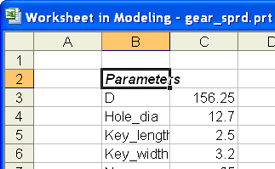

将部件中的表达式提取到电子表格中
您将把部件中的表达式提取到电子表格的 B 列和 C 列中。
-
选择工具→电子表格。
调整电子表格窗口以便您可以同时看到电子表格以及图形窗口。
-
在电子表格中，选择加载项→选项→NX 首选项。
-
在首选项对话框中，确认已选中竖直方向复选框
 。
。 -
点击确定
-
选择单元格 B2。
-
点击菜单栏中的加载项→提取表达式。
将把部件中的所有表达式添加到电子表格中，第一列为表达式名称，第二列为表达式值。

-
将 B 列加宽到12个字符的宽度。
- 将 C 列加宽到12个字符的宽度。